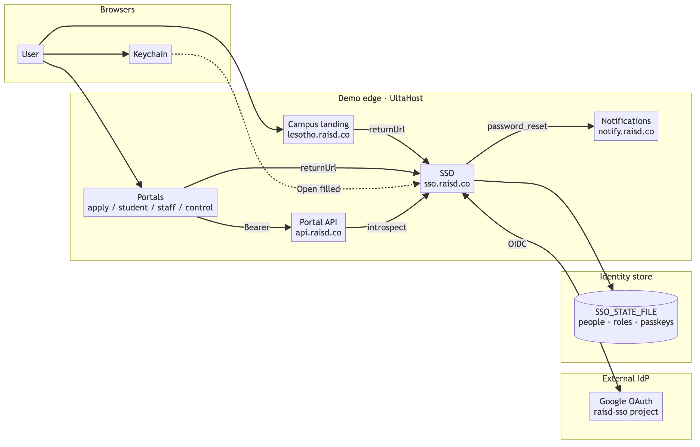
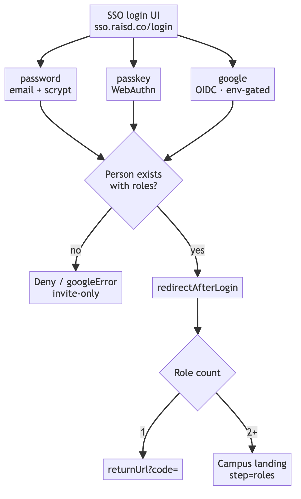
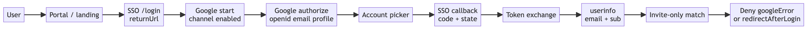
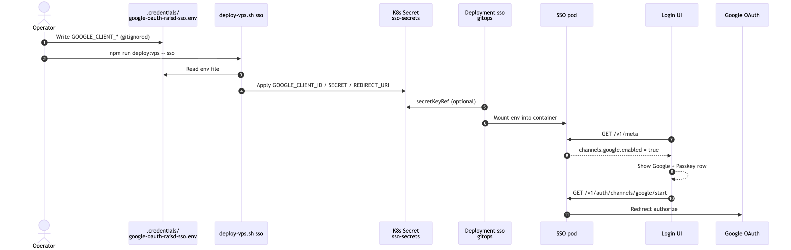

Demo
password · passkey · google
Invite-only email
Raisd SSO — identity, channels, Google OAuth
SSO owns login and RBAC at sso.raisd.co.
Portals never open Postgres for identity — they redirect here with a
returnUrl, then call Portal API with a Bearer token that API
introspects against SSO.
Markdown SoT: backend/sso.md · Contract: openapi-sso.yaml · Live: login · /v1/meta
Figures: pre-rendered Mermaid PNGs (sources under mermaid/). Demo ≠ Live.
Channels (Demo)
| Channel | Status | Mechanism |
|---|---|---|
password |
On | Email + scrypt hash. Forgot-password via Notifications. |
passkey |
On | WebAuthn on sso.raisd.co. Create after email+password; then sign in with passkey alone. |
google |
On when GOOGLE_CLIENT_* mounted |
OIDC (openid email profile). Invite-only: Google email must already match a person with roles. GCP project raisd-sso under Workspace contentcreation.com.my. |
email_magic_link |
Off | Returns 410. Template retained for a future Live reopen. |
1. SSO in the Demo stack

returnUrl.
Keychain can prefill password Demo accounts. Portal API never trusts a client-minted role —
it introspects the Bearer against SSO. People, roles, and passkeys live in
SSO_STATE_FILE on the hostPath volume.
2. Login channels → continuation

redirectAfterLogin → single-role ?code= or multi-role campus picker.
Unknown Google emails get /login?googleError=… — no auto-provision.
3. Google OAuth sequence

GET /v1/auth/channels/google/start?returnUrl=… → Google authorize →
callback /v1/auth/channels/google/callback → token exchange → OpenID userinfo →
findPersonByEmail. Redirect URI:
https://sso.raisd.co/v1/auth/channels/google/callback.
OAuth app is External / Testing until WG adds test users or publishes.
4. Secrets and channel enablement

.credentials/google-oauth-raisd-sso.env →
deploy-vps.sh sso → K8s sso-secrets → Deployment
secretKeyRef → pod → /v1/meta enables the Google button → start redirects to Google.
Related
- Knowledge — backend/sso.md
- Access hierarchy — diagram
- Guidance sign-in — Keychain → SSO
- Architecture microservices — architecture.html#services
- Service repo — raisd-campus/sso